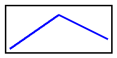

We study the convergence of gradient descent on smooth convex functions and give a simple bound.
Let be convex and -smooth [1]. The update is
Our contributions are:
The method is old1 and is described in the textbook.
| Method | Accuracy | Time (s) |
|---|---|---|
| GD | 91.2 | 10.3 |
| SGD | 92.8 | 4.1 |

inline code.def step(x, grad, eta):
return x - eta * grad(x)[1] Y. Nesterov. Introductory Lectures on Convex Optimization. Springer, 2004.
[2] S. Boyd and L. Vandenberghe. Convex Optimization. Cambridge University Press, 2004.